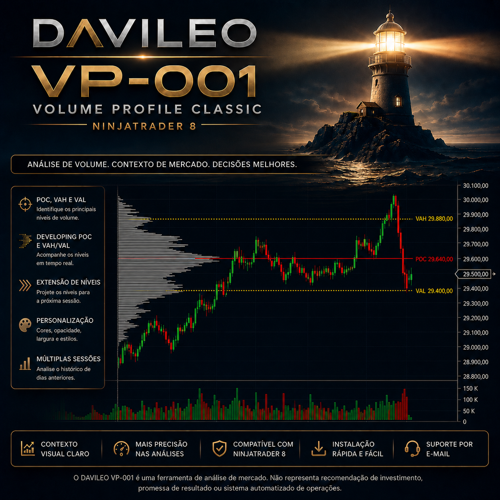

VP-001 Volume Profile Classic
Volume por preço, POC, VAH, VAL e Value Area organizados por sessão em uma leitura clássica, clara e configurável para o NinjaTrader 8.
Versão 1.0 · NinjaTrader 8 Desktop · Manual completo incluído · Pagamento processado pela Eduzz

O volume negociado em cada nível de preço
O DAVILEO VP-001 Volume Profile Classic apresenta a distribuição do volume por preço dentro de cada sessão. O histograma evidencia as regiões de maior e menor participação, enquanto POC, VAH e VAL organizam as principais referências do perfil.
A configuração pode permanecer simples e familiar ou incorporar níveis em desenvolvimento e extensões para análises mais detalhadas, sem trocar de indicador.
Referências objetivas de volume
Um perfil que respeita o seu gráfico
Validado em gráficos de 1, 5 e 15 minutos. O resultado depende da disponibilidade e da qualidade do histórico por tick, do ativo, do contrato e do template de Trading Hours.
Assembly compilado e manual completo
A compra inclui o instalador compilado do DAVILEO VP-001 Volume Profile Classic v1.0 e o Manual de Instalação e Uso em PDF.
O licenciamento utiliza o sistema oficial de Vendor Licensing do NinjaTrader e é vinculado ao e-mail autorizado para a licença adquirida.
R$ 197,00
Compra única. Inclui o indicador compilado, arquivo de instalação e manual em PDF.
Pix, boleto e cartão, conforme as opções apresentadas no checkout da Eduzz.
Comprar agora Documentação e suporte →Antes de adquirir
O VP-001 funciona em qualquer ativo?
O indicador pode ser aplicado a instrumentos compatíveis com o NinjaTrader 8, desde que a conexão forneça histórico intradiário por tick suficiente para formar o perfil.
Preciso de Tick Replay ou Order Flow?
Não. O VP-001 utiliza uma série secundária de 1 tick e não exige licença do módulo Order Flow. A disponibilidade dos dados depende da conexão contratada pelo usuário.
Como recebo o produto?
Após a confirmação da compra, a entrega digital contém o instalador compilado e o Manual de Instalação e Uso em PDF.
Como a licença é ativada?
A licença utiliza o Vendor Licensing oficial do NinjaTrader e é vinculada ao e-mail autorizado no cadastro.
Requisitos
NinjaTrader 8 Desktop — 64 bits, conexão de dados compatível, histórico intradiário por tick e internet para validação da licença.
Natureza do produto
O VP-001 é uma ferramenta informativa de análise de mercado. Não fornece sinais, aconselhamento financeiro, garantia de resultados ou recomendação de compra e venda. A negociação de futuros envolve riscos substanciais e pode não ser adequada a todos os investidores.
NinjaTrader® é marca registrada da NinjaTrader Group, LLC. A DAVILEO desenvolve este Add-On de forma independente. A referência à plataforma indica compatibilidade e não representa promessa de desempenho operacional.